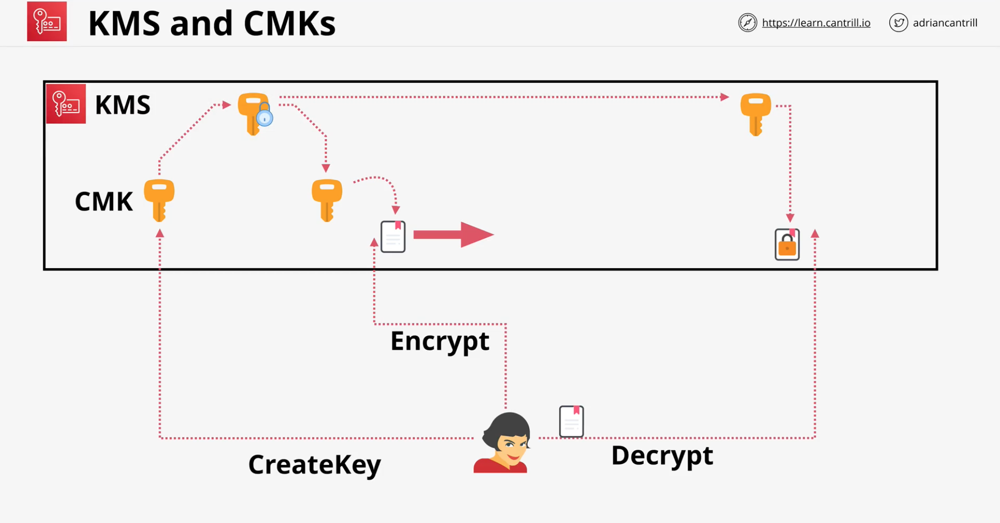

Key Management Service
AWS KMS
Key Management Service
- Regional and Public Service
- Create, Store and Manage Keys
- Supports both symmetric and asymmetric keys
- Also supports cryptographic operations - encrypt, decrypt & ...
- Keys never leave KMS - Provides FIPS 140-2 (L2)
Customer Master Keys (CMK)
- CMK - Customer Master Key
- CMK is logical - ID, date, policy, desc and date
- backed by physical key material
- key material can be generated or imported
- CMK can be used (encrypt/decrypt) for up to 4KB of data
- CMK is encrypted by AWS before storing in the disk.

Data Encryption Keys (DEKs)
- Workaround for
4KB datalimitation - GenerateDataKey - works on > 4KB
- linked to specific CMK
- KMS does not store DEK in any way
- generates and discard it once user uses it
- DEK is provided in 2 versions
- Plaintext version
- Ciphertext version
- Encrypt data using plaintext key
- then discard the plaintext key
- Store encrypted key with encrypted ddata
S3 create
DEKfor every object
Key Concepts
- CMKs are isolated to a region and never leave
- AWS Managed or Customer Managed CMKs
- Customer keys and AWS keys
- Customer Managed Keys are more configurable
- Both types of keys support rotation
| Type of KMS key | Can view KMS key metadata | Can manage KMS key | Used only for my AWS account | Automatic rotation |
|---|---|---|---|---|
| Customer managed key | Yes | Yes | Yes | Optional. Every 365 days (1 year). |
| AWS managed key | Yes | No | Yes | Required. Every 1095 days (3 years). |
| AWS owned key | No | No | No | Varies |
- CMK itself contains Backing Key as well as previous backing keys
- Aliases for CMKs - Per Region
Key Policies and Securities
- Key Policies (Resource)
- Every CMK has a key policy
- Customer manage CMK policy can be adjusted
- CMK key policy explicity told to trust AWS account
- IAM policies to ensure IAM role/user have access to KMS operation on the key